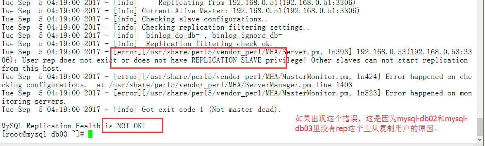
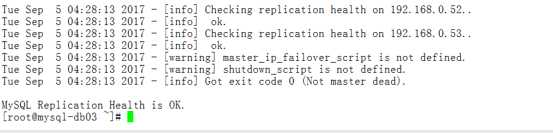
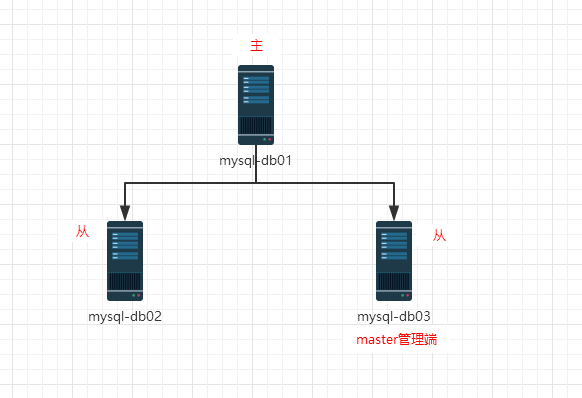
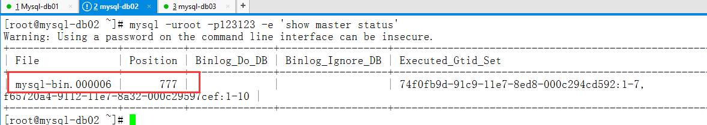
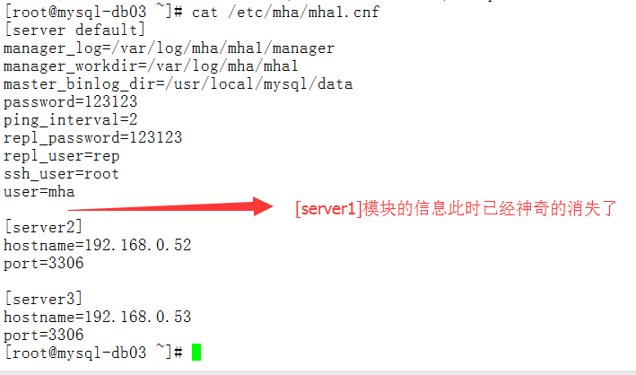
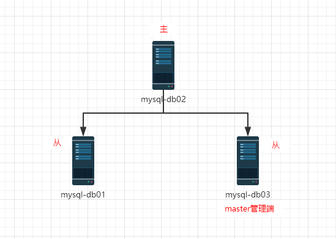

5.部署MHA
5.1 环境准备（所有节点mysql-db01,mysql-db02,mysql-db03）
#光盘安装依赖包
[root@mysql-db01 ~]# yum -y install perl-DBD-MySQL
#安装mha4mysql-node-0.56-0.el6.noarch.rpm
[root@mysql-db01 rpm]# rpm -ivh mha4mysql-node-0.56-0.el6.noarch.rpm
Preparing... ########################################### [100%]
1:mha4mysql-node ########################################### [100%]
[root@mysql-db01 ~]# mysql -uroot -p123123
mysql> grant all privileges on *.* to mha@'192.168.0.%' identified by '123123';
Query OK, 0 rows affected (0.00 sec)
mysql> select user,host from mysql.user where user='mha';
+------+-------------+
| user | host |
+------+-------------+
| mha | 192.168.0.% | #主库上创建从库会自动复制
+------+-------------+
1 row in set (0.00 sec)
#特别提示：3台MySQL都需要安装mha4mysql-node-0.56-0.el6.noarch.rpm
5.2 部署管理节点（mha-manager）
5.2.1 在mysql-db03上部署管理节点
#使用阿里云源+epel源
wget -O /etc/yum.repos.d/CentOS-Base.repo http://mirrors.aliyun.com/repo/Centos-6.repo
wget -O /etc/yum.repos.d/epel-6.repo http://mirrors.aliyun.com/repo/epel-6.repo
#安装manager依赖包（需要公网源）
[root@mysql-db03 ~]# yum -y install perl-Config-Tiny epel-release perl-Log-Dispatch perl-Parallel-ForkManager perl-Time-HiRes
#安装manager包
[root@mysql-db03 rpm]# rpm -ivh mha4mysql-manager-0.56-0.el6.noarch.rpm
Preparing... ########################################### [100%]
1:mha4mysql-manager ########################################### [100%]
5.2.2 编辑配置文件
#创建配置文件目录
[root@mysql-db03 ~]# mkdir -p /etc/mha
#创建日志目录
[root@mysql-db03 ~]# mkdir -p /var/log/mha/mha1
#创建配置文件（默认没有）
[root@mysql-db03 ~]# cd /etc/mha/
[root@mysql-db03 mha]# ls
[root@mysql-db03 mha]# vim /etc/mha/mha1.cnf
[root@mysql-db03 mha]# cat /etc/mha/mha1.cnf
[server default]
manager_log=/var/log/mha/mha1/manager #manager管理日志存放路径
manager_workdir=/var/log/mha/mha1 #manager管理日志的目录路径
master_binlog_dir=/usr/local/mysql/data #binlog日志的存放路径
user=mha #管理账户
password=123123 #管理账户密码
ping_interval=2 #存活检查的间隔时间
repl_user=rep #主从复制的授权账户repl_password=123123 #主从复制的授权账户密码
ssh_user=root #用于ssh连接的账户
[server1]
hostname=192.168.0.51
port=3306
[server2]
#candidate_master=1 #此条暂时注释掉（后面解释）
#check_repl_delay=0 #此条暂时注释掉（后面解释）hostname=192.168.0.52
port=3306
[server3]
hostname=192.168.0.53
port=3306
#**特别提示：**#以上配置文件内容里每行的最后不要留有空格，因此，不能复制的呦
特别说明：
参数：candidate_master=1 解释：设置为候选master，如果设置该参数以后，发生主从切换以后会将此从库提升为主库，即使这个主库不是集群中事件最新的slave 。 参数：check_repl_delay=0 解释：默认情况下如果一个slave落后master 100M的relay logs 的话，MHA将不会选择该slave作为一个新的master，因为对于这个slave的恢复需要花费很长时间，通过设置check_repl_delay=0,MHA触发切换在选择一个新的master的时候将会忽略复制延时，这个参数对于设置了candidate_master=1的主机非常有用，因为这个候选主在切换的过程中一定是新的master。
5.3 配置ssh信任（所有节点mysql-db01,mysql-db02,mysql-db03）
#创建密钥对
[root@mysql-db03 ~]# ssh-keygen -t dsa -P "" -f ~/.ssh/id_dsa >/dev/null 2>&1
#发送mysql-db03公钥，包括自己
[root@mysql-db03 ~]# ssh-copy-id -i /root/.ssh/id_dsa.pub root@192.168.0.51
[root@mysql-db03 ~]# ssh-copy-id -i /root/.ssh/id_dsa.pub root@192.168.0.52
[root@mysql-db03 ~]# ssh-copy-id -i /root/.ssh/id_dsa.pub root@192.168.0.53
#发送mysql-db02公钥，包括自己
[root@mysql-db02 ~]# ssh-copy-id -i /root/.ssh/id_dsa.pub root@192.168.0.51
[root@mysql-db02 ~]# ssh-copy-id -i /root/.ssh/id_dsa.pub root@192.168.0.52
[root@mysql-db02 ~]# ssh-copy-id -i /root/.ssh/id_dsa.pub root@192.168.0.53
#发送mysql-db01公钥，包括自己
[root@mysql-db01 ~]# ssh-copy-id -i /root/.ssh/id_dsa.pub root@192.168.0.51
[root@mysql-db01 ~]# ssh-copy-id -i /root/.ssh/id_dsa.pub root@192.168.0.52
[root@mysql-db01 ~]# ssh-copy-id -i /root/.ssh/id_dsa.pub root@192.168.0.53
5.4 启动测试
5.4.1 ssh检查检测
[root@mysql-db03 ~]# masterha_check_ssh --conf=/etc/mha/mha1.cnf #ssh检查命令
Tue Sep 5 03:01:38 2017 - [warning] Global configuration file /etc/masterha_default.cnf not found. Skipping.
Tue Sep 5 03:01:38 2017 - [info] Reading application default configuration from /etc/mha/mha1.cnf..
Tue Sep 5 03:01:38 2017 - [info] Reading server configuration from /etc/mha/mha1.cnf..
Tue Sep 5 03:01:38 2017 - [info] Starting SSH connection tests..
..中间省略若干行..
Tue Sep 5 03:01:40 2017 - [debug] Connecting via SSH from root@192.168.0.53(192.168.0.53:22) to root@192.168.0.52(192.168.0.52:22)..
Tue Sep 5 03:01:40 2017 - [debug] ok.
Tue Sep 5 03:01:40 2017 - [info] All SSH connection tests passed successfully. #出现这个就表示成功
5.4.2 主从复制检测
（1）错误的主从复制检测
[root@mysql-db03 ~]# masterha_check_repl --conf=/etc/mha/mha1.cnf
如果不出意外，同学们的检测结果都会是下面的样子

因此在mysql-db02和mysql-db03上添加主从复制的用户即可。
grant replication slave on *.* to rep@'192.168.0.%' identified by '123123';再次检查如下图所示：
再次检查如下图所示：

5.5 启动MHA
#启动
[root@mysql-db03 ~]# nohup masterha_manager --conf=/etc/mha/mha1.cnf --remove_dead_master_conf --ignore_last_failover < /dev/null > /var/log/mha/mha1/manager.log 2>&1 &
[root@mysql-db03 ~]# ps -ef | grep perl | grep -v greproot 4961 4690 0 06:33 pts/2 00:00:00 perl /usr/bin/masterha_manager --conf=/etc/mha/mha1.cnf --remove_dead_master_conf --ignore_last_failover
#说明：
nohup:启动命令
--conf：指定配置文件位置
--remove_dead_master_conf：如果有master down了，就去掉配置文件里该master的部分。
5.6 进行mha自动切换master的测试
初始状态：

（1）登陆mysql-db02(192.168.0.53)查看信息状态
#登陆数据库mysql-db02(192.168.0.53)
[root@mysql-db03 ~]# mysql -uroot -p123123
mysql> show slave status\G
*************************** 1. row ***************************
Slave_IO_State: Waiting for master to send event
Master_Host: 192.168.0.51 #这是主库IP地址
Master_User: rep
Master_Port: 3306
Connect_Retry: 60
Master_Log_File: mysql-bin.000003
Read_Master_Log_Pos: 1656
Relay_Log_File: mysql-db02-relay-bin.000004
Relay_Log_Pos: 1796
Relay_Master_Log_File: mysql-bin.000003
Slave_IO_Running: Yes
Slave_SQL_Running: Yes
..以下省略若干内容..
（2）停掉mysql-db01(192.168.0.51)上的MySQL服务
[root@mysql-db01 ~]# /etc/init.d/mysqld stop
Shutting down MySQL..... SUCCESS!
（3）查看mysql-db03上的MySQL从库同步状态
[root@mysql-db03 ~]# mysql -uroot -p123123 -e 'show slave status\G'
Warning: Using a password on the command line interface can be insecure.
*************************** 1. row ***************************
Slave_IO_State: Waiting for master to send event
Master_Host: 192.168.0.52 #现在的主库IP
Master_User: rep
Master_Port: 3306
Connect_Retry: 60
Master_Log_File: mysql-bin.000006 #binlog日志
Read_Master_Log_Pos: 777 #binlog日志位置
Relay_Log_File: mysql-db03-relay-bin.000002
Relay_Log_Pos: 408
Relay_Master_Log_File: mysql-bin.000006
Slave_IO_Running: Yes
Slave_SQL_Running: Yes
..以下省略若干内容..
（4）查看mysql-db02上的MySQL，主库同步状态。

（5）查看mysql-db03上的mha进程状态
[root@mysql-db03 ~]# ps -ef | grep perl | grep -v grep #查询发现mha进程已经没了
[root@mysql-db03 ~]#
（6）查看mha配置文件信息

说明： 当作为主库的mysql-db01上的MySQL宕机以后，mha通过检测发现mysql-db01宕机，那么会将binlog日志最全的从库立刻提升为主库，而其他的从库会指向新的主库进行再次同步。
5.7 进行mha的故障还原测试
由于mysql-db01的MySQL服务宕机，因此mha将mysql-db02提升为了主库。因此，我们需要将宕机的mysql-db01的MySQL服务启动，然后作为主库mysql-db02的从库。
初始状态：

（1）将故障宕机的mysql-db01的MySQL服务启动并授权进行从同步
[root@mysql-db01 ~]# /etc/init.d/mysqld start
Starting MySQL. SUCCESS!
[root@mysql-db01 ~]# mysql -uroot -p123123
mysql> CHANGE MASTER TO MASTER_HOST='192.168.0.52', MASTER_PORT=3306, MASTER_AUTO_POSITION=1, MASTER_USER='rep', MASTER_PASSWORD='123123';
mysql> start slave;
mysql> show slave status\G #查看从同步状态
（2）将mha配置文件里缺失的部分补全
[root@mysql-db03 ~]# cat /etc/mha/mha1.cnf
[server default]
manager_log=/var/log/mha/mha1/manager
manager_workdir=/var/log/mha/mha1
master_binlog_dir=/usr/local/mysql/data
password=123123
ping_interval=2
repl_password=123123
repl_user=rep
ssh_user=root
user=mha
[server1]
hostname=192.168.0.51
port=3306
[server2]
hostname=192.168.0.52
port=3306
[server3]
hostname=192.168.0.53
port=3306
（3）启动mha进程
[root@mysql-db03 ~]# nohup masterha_manager --conf=/etc/mha/mha1.cnf --remove_dead_master_conf --ignore_last_failover < /dev/null > /var/log/mha/mha1/manager.log 2>&1 &
[root@mysql-db03 ~]# ps -ef | grep perl | grep -v grep
root 5226 4690 0 09:42 pts/2 00:00:00 perl /usr/bin/masterha_manager --conf=/etc/mha/mha1.cnf --remove_dead_master_conf --ignore_last_failover
（4）停掉mysql-db02上的MySQL服务
[root@mysql-db02 ~]# /etc/init.d/mysqld stop
Shutting down MySQL..... SUCCESS!
（5）查看mysql-db03上的主从同步状态
[root@mysql-db03 ~]# mysql -uroot -p123123 -e 'show slave status\G'
Warning: Using a password on the command line interface can be insecure.
*************************** 1. row ***************************
Slave_IO_State: Waiting for master to send event
Master_Host: 192.168.0.51 #此时的主库IP切换回了
mysql-db01 Master_User: rep
Master_Port: 3306
Connect_Retry: 60
Master_Log_File: mysql-bin.000005
Read_Master_Log_Pos: 231
Relay_Log_File: mysql-db03-relay-bin.000002
Relay_Log_Pos: 361
Relay_Master_Log_File: mysql-bin.000005
Slave_IO_Running: Yes
Slave_SQL_Running: Yes
..以下省略若干行..
（6）启动mysql-db02上的MySQL服务
[root@mysql-db02 ~]# /etc/init.d/mysqld start
Starting MySQL. SUCCESS!
[root@mysql-db02 ~]# mysql -uroot -p123123
mysql> CHANGE MASTER TO MASTER_HOST='192.168.0.51', MASTER_PORT=3306, MASTER_AUTO_POSITION=1, MASTER_USER='rep', MASTER_PASSWORD='123123';
mysql> start slave;
mysql> show slave status\G#查看从同步状态
（7）再次补全mha配置文件后，启动mha进程
[root@mysql-db03 ~]# cat /etc/mha/mha1.cnf
[server default]
manager_log=/var/log/mha/mha1/manager
manager_workdir=/var/log/mha/mha1
master_binlog_dir=/usr/local/mysql/data
password=123123
ping_interval=2
repl_password=123123
repl_user=rep
ssh_user=root
user=mha
[server1]
hostname=192.168.0.51
port=3306
[server2]
hostname=192.168.0.52
port=3306
[server3]
#andidate_master=1
#check_repl_delay=0
hostname=192.168.0.53
port=3306
[root@mysql-db03 ~]# nohup masterha_manager --conf=/etc/mha/mha1.cnf --remove_dead_master_conf --ignore_last_failover < /dev/null > /var/log/mha/mha1/manager.log 2>&1 &
[root@mysql-db03 ~]# ps -ef | grep perl | grep -v grep
root 5226 4690 0 09:42 pts/2 00:00:01 perl /usr/bin/masterha_manager --conf=/etc/mha/mha1.cnf --remove_dead_master_conf --ignore_last_failover
此时的初始状态还原为下图：